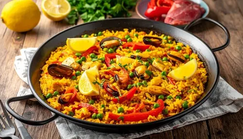

Ingredientes
- 400 g de arroz bomba
- 1/2 pollo troceado
- 1/2 conejo troceado
- 200 g de judías verdes planas
- 150 g de garrofón
- 1 tomate rallado
- 1 cucharadita de pimentón dulce
- Azafrán, aceite de oliva, sal y agua
Preparación
- Calienta aceite en la paellera y sofríe el pollo y el conejo con sal hasta que se doren.
- Añade las judías verdes y el garrofón y rehoga unos minutos.
- Incorpora el tomate rallado y el pimentón y sofríe sin que se queme.
- Añade el agua y el azafrán, y deja hervir unos 20 minutos.
- Echa el arroz repartido por toda la paellera y cocina 18 minutos sin remover.
- Deja reposar 5 minutos tapada con un paño y sirve.